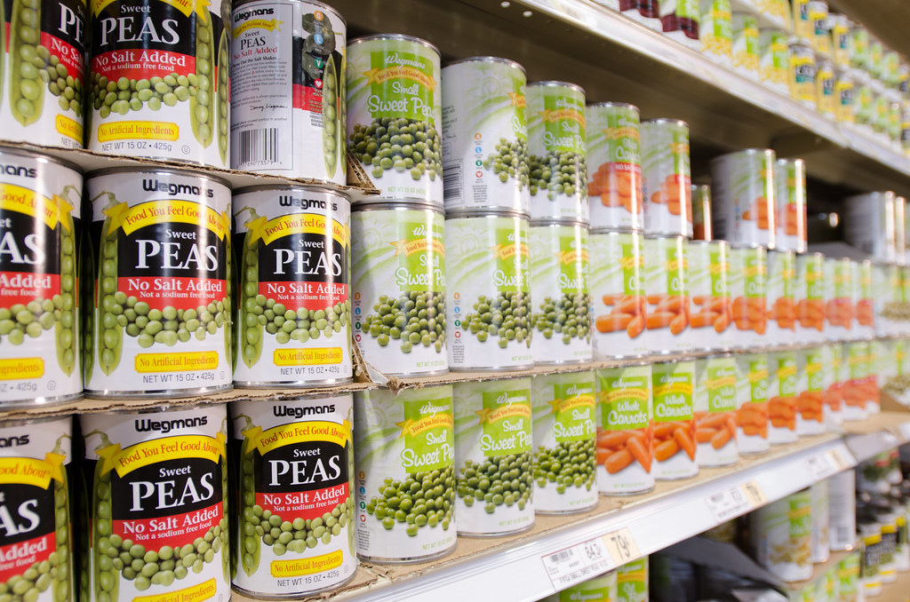

今日は9月1日、防災の日です。
そして今日は、災害用伝言ダイヤル「171」を無料で練習できる日でもあります。防災週間として、8月30日9時から9月5日17時まで、本番と同じ手順を試せます。
この記事は、家族と暮らしている人にも、一人で暮らしている人にも向けて書きました。会社の事業継続計画の話ではなく、自宅の話です。AIを使ってできることと、AIに絶対に任せてはいけないことを分けて書きます。所要30分です。
やらない理由は、知識でも予算でもなかった
内閣府が「防災に関する世論調査」の結果を公表しています。2025年8月21日から9月28日にかけて全国の18歳以上に郵送で行い、1,707人が回答したものです。
そこに、少し意外な数字がありました。
大地震に備えてとっている対策のうち、「家族の安否確認の方法などを決めている」と答えた人は15.1%。7人に1人です。避難場所・避難経路を決めている人は37.0%、食料・飲料水などを準備している人は46.1%なので、連絡手段だけが極端に低い。
やらない理由も聞いています。
家族や身近な人と災害の話をしたことが「ない」人は35.1%。その理由の1位は「話し合うきっかけがなかったから」で56.7%でした。家具を固定していない人にその理由を聞くと、1位は「やろうと思っているが先延ばしにしてしまっているから」で38.2%、次いで「面倒だから」20.7%。
足りていないのは知識でも予算でもありません。きっかけと、最初の面倒を越える力です。
AIが役に立つのは、まさにそこです。
水は7割、携帯トイレは3割
同じ調査で、3日分以上を備蓄しているものを聞いています。
- 飲料水 69.8%
- 食料品 59.8%
- 衛生用品 38.4%
- 食品加熱用熱源 27.7%
- 携帯トイレ・簡易トイレ 27.2%
- 暑さ・寒さ対策の消耗品 18.6%
水と食料は思いつくのです。トイレは思いつかない。断水すれば水洗トイレは使えなくなるのに、用意している人は4人に1人です。
この差がそのまま、「自分では思いつかなかったもの」の量です。そしてAIがいちばん得意なのが、この思いつかなかったものを並べることです。
そのまま使えるプロンプト1：備蓄の買い物リスト
下のかたちをそのままコピーして、【 】の中だけ自分の家の言葉に置き換えてください。
防災の備蓄を見直したい。下の条件で、7日分の買い物リストを作ってください。 水と食料以外で、忘れられがちなものを優先してください。数量も入れてください。 ・住まい：【戸建て／マンション◯階】 ・大人：【◯】人 ・子ども：【◯】人（年齢：【◯】歳） ・高齢の家族：【いる／いない】 ・ペット：【いる（種類と頭数）／いない】 ・持病、アレルギー、いつも飲んでいる薬：【あれば書く】 ・すでに家にあるもの：【水／食料／懐中電灯 など】
埋められない欄は【 】のままで大丈夫です。分かる分だけでも、自分の家に寄ったリストが返ってきます。
条件を足すほど精度は上がります。粉ミルク、介護、生理用品、コンタクトレンズ、住んでいる階。ここに書いた分だけ、リストに反映されます。
AIに任せていいこと、任せてはいけないこと
ここが、この記事でいちばん持ち帰ってほしい線引きです。
| やること | どこでやるか |
|---|---|
| 家族構成に合わせた備蓄リストを作る | AIでよい |
| 非常持ち出し袋の中身を写真で見せて、足りないものを指摘してもらう | AIでよい |
| 家族のルールを、印刷できる文章に整える | AIでよい |
| 賞味期限の管理表を作る | AIでよい |
| 高齢の親や外国籍の家族に向けて、やさしい言葉に書き直す | AIでよい |
| 自宅がどの災害の危険区域にあたるか | AIに聞かない。重ねるハザードマップ（国土交通省）と自治体のサイト |
| いちばん近い避難所はどこか | AIに聞かない。自治体のサイト |
| 備蓄の必要量の計算 | 公式ツールが正確。東京備蓄ナビなど |
危険区域と避難所をAIに聞かないでほしい理由は単純です。AIは知らないことを、それらしい文章で埋めてしまうことがあります。避難先の間違いは命に直結します。
備蓄の数量も同じです。東京都の「東京備蓄ナビ」のように、人数と年代と住まいの種類を入れると必要量が出る公式ツールがあります。戸建てなら3日分、マンションなら7日分で計算されます。数量はこちらが正確です。
AIは、公式が出した答えを自分の家の事情に翻訳する係。役割をここで切ると、間違いが減ります。
そのまま使えるプロンプト2：家族のルールをA4一枚に
災害で家族とはぐれた時のルールを、A4一枚に印刷できるかたちで作ってください。 小学生でも読める言葉で、文字は大きめにしてください。 ・家族構成：【 】 ・住んでいる場所：【市区町村まで】 ・集合場所の候補：【思いつくものがあれば書く。なければ「候補も提案して」と書く】 入れてほしい欄： ・集合場所の第1候補と第2候補 ・災害用伝言ダイヤル171の使い方 ・家族全員の携帯番号を書き込む空欄 ・勤務先と学校、保育園の連絡先を書き込む空欄
一人暮らしの人は、家族構成の欄に「一人暮らし」と書けば、離れて住む親や友人に安否を伝える手順に変わります。
その日、AIは使えません
ここがいちばん大事なところです。
2024年の能登半島地震で何が起きたか、総務省の情報通信白書に記録があります。1月3日時点で、携帯4社を合計して最大839の基地局が停波しました。うち799局が石川県です。NTTドコモは能登半島北部で、支障のあったエリアが最大70%に達しています。
応急復旧がおおむね終わったのは、KDDI・ソフトバンク・楽天モバイルが1月15日、NTTドコモが1月17日。発災から2週間です。
その2週間、スマートフォンは検索窓ではありませんでした。
だからAIにやらせるべきなのは、当日その場で助けてもらうことではありません。その日に使うものを、今日のうちに紙にすることです。
作った家族ルールは印刷して冷蔵庫に貼る。同じものを財布とランドセルに1枚ずつ。備蓄リストは印刷して押し入れの扉の内側に貼る。画面の中に置いたままにしない。
今日やること
- 171を練習する。9月5日17時までは無料で試せます。171にかけて、案内に従って録音は1、再生は2。相手の電話番号を市外局番から入れます。1件30秒。家族全員でやると、当日に迷いません
- プロンプト2で家族ルールを作り、印刷して冷蔵庫に貼る
- 非常持ち出し袋の中身を床に広げて写真を撮り、AIに見せる。文はこれで足ります。「写真は我が家の非常持ち出し袋の中身です。【大人◯人・子ども◯人・ペット◯】の家庭で、足りないものを教えてください。多くの人が入れ忘れるものを優先して、理由も一言ずつ添えてください」
- ハザードマップと避難所は公式サイトで確かめる。備蓄の数量も公式ツールで出す
まとめ
- 家族の安否確認の方法を決めている人は15.1%。話し合わない理由の1位は「きっかけがなかったから」56.7%
- 3日分以上の備蓄は、飲料水69.8%に対して携帯トイレは27.2%。思いつかないものが抜ける
- AIは、思いつかなかったものを並べる係。避難所とハザードは公式サイト、備蓄量は公式ツールが正
- 能登半島地震では最大839基地局が停波し、応急復旧まで2週間かかった。当日、AIは使えない
- だから今日、紙に出す
AIで浮くのは、調べる時間と、書き出す時間です。防災でいえば、いちばん面倒でいちばん後回しになる部分がそこにあたります。
その30分を越えた先にあるのは、家族と少し話をして、紙を一枚冷蔵庫に貼る、という何でもない時間です。今日はそこまでやれます。
出典
内閣府「防災に関する世論調査（令和7年8月調査）」調査時期 2025年8月21日〜9月28日／郵送法・層化2段無作為抽出／標本3,000人・有効回収1,707人・回収率56.9%／概略版 2025年10月17日、確報 2025年12月24日掲載
https://survey.gov-online.go.jp/public_safety/202510/r07/r07-bousai/
総務省「令和6年版 情報通信白書」第1章第2節（基地局停波数は総務省「令和6年能登半島地震に係る被害状況等について（第13報）」2024年1月3日による）
https://www.soumu.go.jp/johotsusintokei/whitepaper/ja/r06/pdf/n1120000.pdf
NTT東日本「災害用伝言ダイヤル（171）体験利用のご案内」防災週間は8月30日9時〜9月5日17時
https://www.ntt-east.co.jp/saigai/voice171s/howto.html
国土交通省「重ねるハザードマップ」
https://disaportal.gsi.go.jp/hazardmap/maps/index.html
東京都「東京備蓄ナビ」
https://www.bichiku.metro.tokyo.lg.jp/
農林水産省「災害時に備えた食品ストックガイド」最低3日分、できれば1週間分の家庭備蓄を推奨
https://www.maff.go.jp/j/zyukyu/foodstock/guidebook.html
写真: Openverse（パブリックドメイン）
会社の防災マニュアルも、同じ問題を抱えています
作ったマニュアルは、必要な日に誰も開きません。探すのではなく聞けば出る形にするのが、私たちの社内ナレッジAIです。初回のご相談は無料です。
無料相談を予約する →